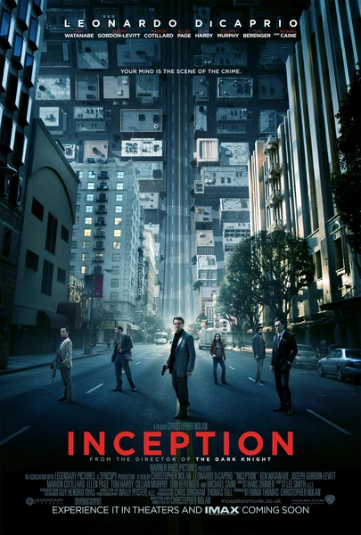

Фильм · 2010 · Детектив, Фантастика
Команда «экстракторов» внедряется в сны людей, чтобы украсть или внедрить идеи. Головокружительная фантастика о барьере между снами и реальностью и о том, как идеи заражают разум.
A team of extractors infiltrates people's dreams to steal or plant ideas. A dizzying sci-fi about the boundary between dreams and reality and how ideas infect the mind.
← Вернуться в каталог IT Movies